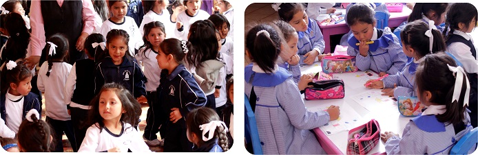
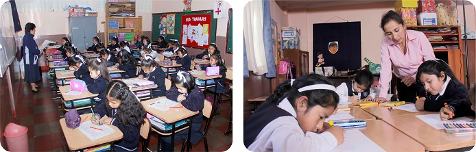
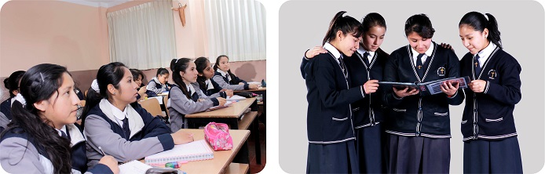

Se utilizará la Metodología Activa. Un método es activo, cuando genera
en la estudiante una acción que resulta del interés, la necesidad o la
curiosidad de la niña. La Docente debe crear esta curiosidad o
necesidad ideando una situación de aprendizaje estimulante, a partir
de ella la estudiante hará una serie de actividades o acciones. Al
término del último año en el Nivel Inicial, nuestras niñas han logrado
su desarrollo personal, afectivo y social, es decir:
- Es un ser sociable, independiente, participativa,
solidaria, crítica, observadora, respetuosa y creativa.
- Se reconoce como persona.
- Valora positivamente sus características biológicas.
- Se identifica como miembro de una familia y de una
comunidad.

La práctica pedagógica debe propiciar el desarrollo de capacidades,
conocimientos y actitudes en relación con el entorno en el que se
desenvuelven las niñas. En este sentido, el docente asume, el rol de
mediador entre el objeto de aprendizaje, los recursos educativos y los
estudiantes. Una buena práctica pedagógica deberá tener en cuenta una
serie de estrategias metodológicas haciendo uso de experiencias
previas.
- Se reconoce como persona, valora positivamente sus
características biológicas, psicomotoras, intelectuales, afectivas
y sociales, y manifiesta sentimientos de pertenencia seguridad y
confianza, en interacción con su medio natural y social.
- Se identifica con su realidad sociocultural, local regional
y nacional y con su historia, y es consciente de su rol presente y
futuro, en el proceso de desarrollo y defensa del país.
- Expresa con seguridad sus sentimientos, ideas, utilizando
lenguajes y respeta las opiniones divergentes, en sus relaciones
interpersonales.

Perfil de una alumna del nivel Secundario:
- Acepta y asume en su vida diaria el Amor misericordioso de
Jesús Buen Pastor y es capaz de acoger, reconciliar, perdonar y
amar al prójimo sin discriminación.
- Como hija de Dios, asume el liderazgo con actitudes desde
la pedagogía de Santa María Eufrasia (veraz, justa, optimista,
crítica, prudente, reflexiva, confiable, humana y solidaria)
- Se comunica asertivamente, demostrando veracidad y
capacidad de escucha, para llegar a acuerdos y construir consensos.
- Manifiesta una formación científica y humanista que le
permite acceder a niveles de estudio superior.